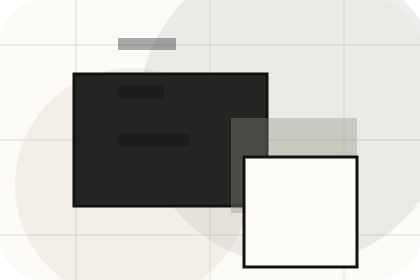
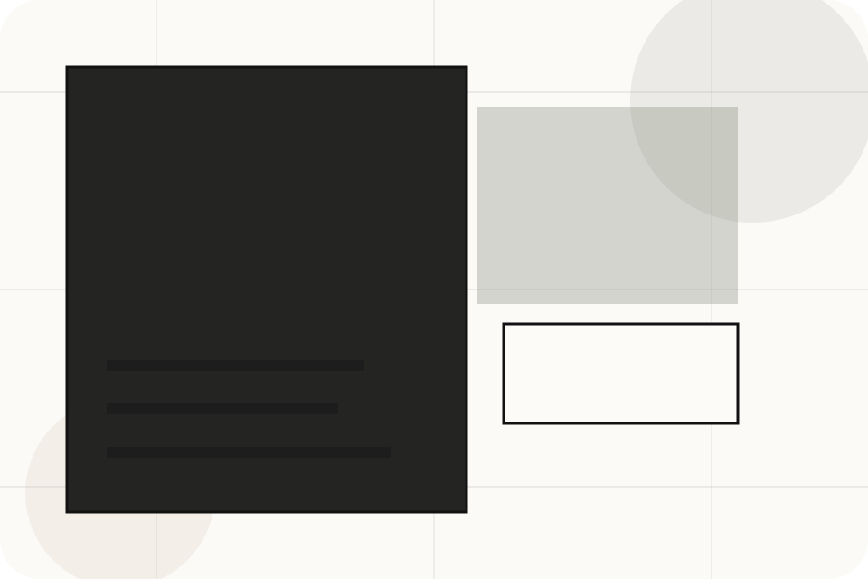
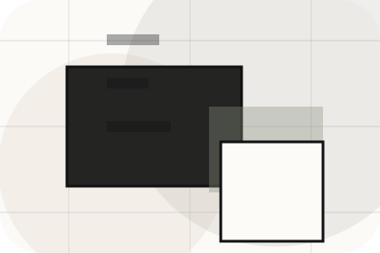
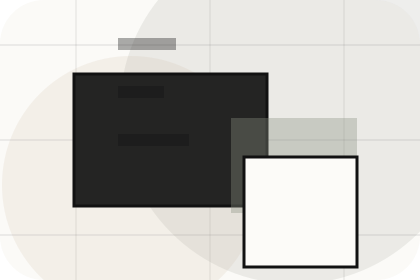
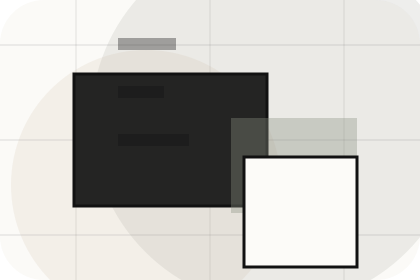
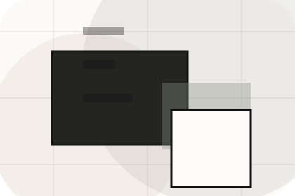
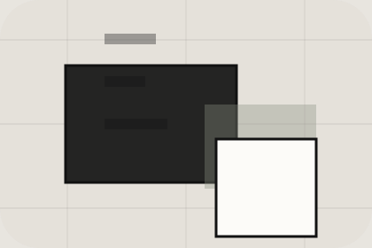

Question
Selling gives the page a specific angle instead of repeating the navigation label.
Questions / 01
Questions opens as a clear real estate decision hub: what Urban offers, who it helps, why it matters, and which route to take first.
The first screen combines positioning, proof, primary action, and fast internal navigation, so people can act immediately or compare the rest of the questions route with context.
Architectural listing hero
Select the closest route and Urban keeps the next step, proof, and follow-up expectation aligned with market confidence and discovery.

Questions / 04
Renting handles buying doubts directly so visitors can understand timing, fit, limits, and the safest next step.
Answers are short by design: enough to remove hesitation, not so much that the page turns into documentation before the visitor can act.
Explore QuestionsRenting gives the page a specific angle instead of repeating the navigation label.
The thin-rule listing cards show what to compare, what to avoid, and what matters most for real estate, property & land services visitors.

The final cue points to a useful internal route so the section keeps the journey moving.
Questions / 05
Fees makes commercial comparison easier by showing fit, scope, and terms before real estate visitors ask for the next step.
The layout keeps price-sensitive decisions honest: it separates starting scope, fuller delivery, and ongoing support so the visitor can ask a sharper question.
View PricingWho the offer is for, which scope it suits, and when a different route may be better.
What is included clearly enough for real estate, property & land services visitors to compare value without hidden jargon.

The practical details that should be confirmed before someone asks to get a valuation.
Who the offer is for, which scope it suits, and when a different route may be better.
ScopedWhat is included clearly enough for real estate, property & land services visitors to compare value without hidden jargon.
QuotedThe practical details that should be confirmed before someone asks to get a valuation.
RetainerQuestions / 06
Documents handles buying doubts directly so visitors can understand timing, fit, limits, and the safest next step.
Answers are short by design: enough to remove hesitation, not so much that the page turns into documentation before the visitor can act.
Explore QuestionsDocuments gives the page a specific angle instead of repeating the navigation label.
The thin-rule listing cards show what to compare, what to avoid, and what matters most for real estate, property & land services visitors.
The final cue points to a useful internal route so the section keeps the journey moving.
Questions / 07
Timelines explains the operating sequence so visitors can see how the first request becomes a clear recommendation and follow-up.
The steps are written from the visitor side: what they do first, what Urban clarifies, what they receive, and how support continues.
Explore QuestionsUrban structures timelines around start, clarify, and a clear next route so visitors can compare the block quickly before they get a valuation.
Get ValuationQuestions / 08
Legal handles buying doubts directly so visitors can understand timing, fit, limits, and the safest next step.
Answers are short by design: enough to remove hesitation, not so much that the page turns into documentation before the visitor can act.
Explore Questions
Legal gives the page a specific angle instead of repeating the navigation label.
Questions / 09
Support explains the practical scope, best-fit situations, and expected outcome so real estate visitors can compare options without decoding jargon.
The section keeps the offer concrete: what is included, who it is best for, what decision it supports, and which linked route gives the deeper detail.
Open ContactWho should use support and when it belongs in the questions journey.

The practical benefit visitors should expect after choosing this route.
Where to compare details, pricing, support, or contact options before committing.
Questions / 10
Urban closes the questions route with a clear action, a quick reminder of the value, and a low-friction way to get a valuation.
Visitors who are ready can use the primary action. Visitors who are still comparing can scan the section links, proof, and support routes before they get a valuation.
Get ValuationThe final block keeps the choice simple: act now, compare one more proof route, or send enough detail for a focused response.
Get Valuationmarket confidence and discovery
A real-estate editorial site with architecture-led listings, sparse navigation, area guides, and valuation flow. Questions ends with a direct path to get a valuation, plus enough context for visitors who still need to compare.

Get ValuationInformation is provided for planning and should be reviewed for the final client, location, and operating rules.